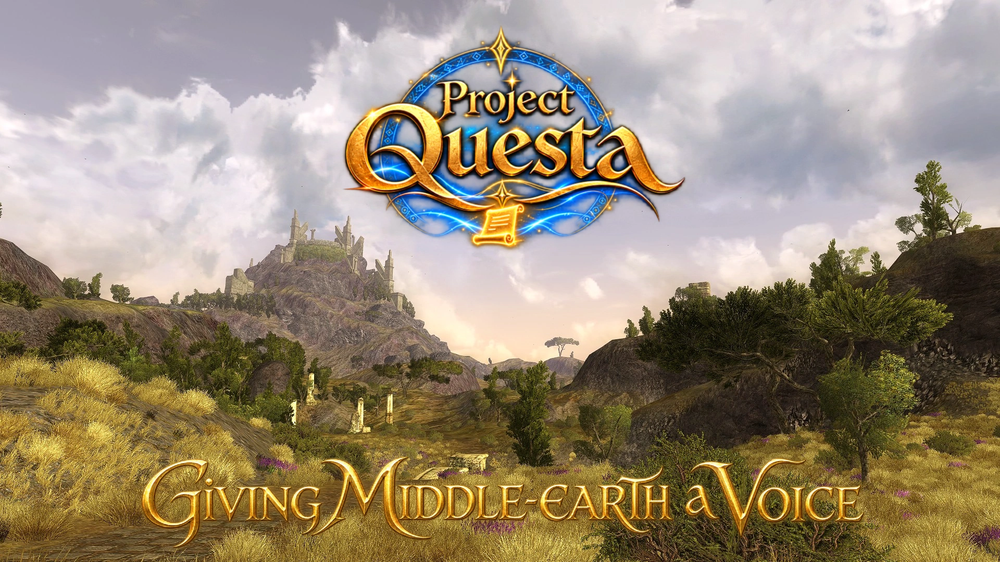

Narrator Mode
One consistent voice reading quest dialogue. The current focus of standalone testing and refinement.

Project Questa · An independent LOTRO companion
Questa is an accessibility-focused Windows utility in development for The Lord of the Rings Online. Its purpose is to bring quest dialogue to life through natural-sounding spoken narration.
See demonstrations and progress reports from private testing. These videos are not announcements of a public release.
The project
LOTRO has a wealth of stories to tell. Questa aims to make those stories easier to enjoy by reading quest text aloud while you play, with an emphasis on clarity, natural delivery and straightforward operation.
Development is proceeding in stages. Only finished, tested resources will be made available for download.
The wider vision
The immediate priority is a reliable narrator. Other approaches are being explored, but these are not announcements of public releases.
One consistent voice reading quest dialogue. The current focus of standalone testing and refinement.
Exploring the use of different voices to give more personality to the characters you meet.
A longer-term idea for specially prepared narration, intended to provide a more performed experience.
Development notes
This page will be updated when there is something meaningful to report. No release date or delivery timetable has been announced.
Standalone Narrator Mode has completed successful internal quest-narration tests. Current work is focused on user-facing improvements: an integrated pronunciation editor, narrator voice selection and volume controls.
Public downloads and installation instructions will appear here only when a release is ready.